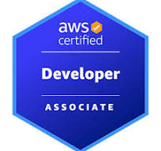

AWS Certifications

Solutions Architect Associate

AWS Cloud Engineer | Cloud Architecture | MLOps | FinOps
Results-driven AWS Cloud Engineer with 6+ years designing secure, scalable multi-account cloud architectures. Experienced in AWS Landing Zones, Infrastructure as Code, MLOps, FinOps, and AI/ML platforms using Amazon SageMaker and Amazon Bedrock.
Designed a multi-account AWS Control Tower environment with centralized security, governance, SCPs, IAM Identity Center, and automated account provisioning.
Built enterprise AI workloads using Amazon Bedrock and SageMaker with automated deployment pipelines and governance controls.
Implemented cost optimization strategies across enterprise AWS accounts resulting in measurable savings and improved resource visibility.
Designed ML workflows, generative AI applications, and automated MLOps pipelines using AWS services.
Implemented Control Tower governance, FinOps automation, and secure IAM architectures.
Delivered AWS IaC solutions, governance frameworks, networking architectures, and security controls.
Built enterprise integration pipelines and automated financial data processes.

B.S. Business Administration & Information Technology
Colorado Technical University
Available for cloud architecture, landing zone modernization, AI/ML platform implementation, FinOps optimization, and enterprise AWS governance initiatives.
Let's Connect